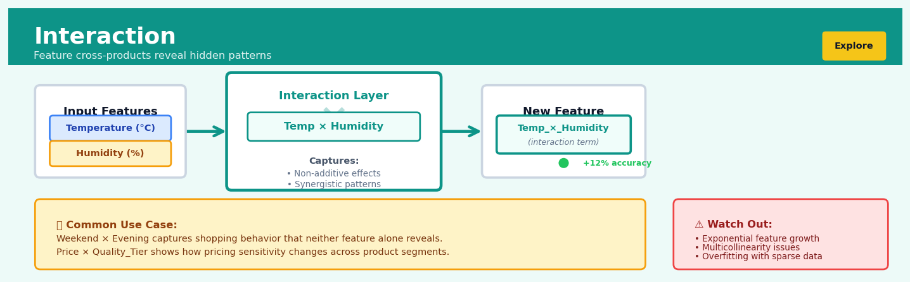
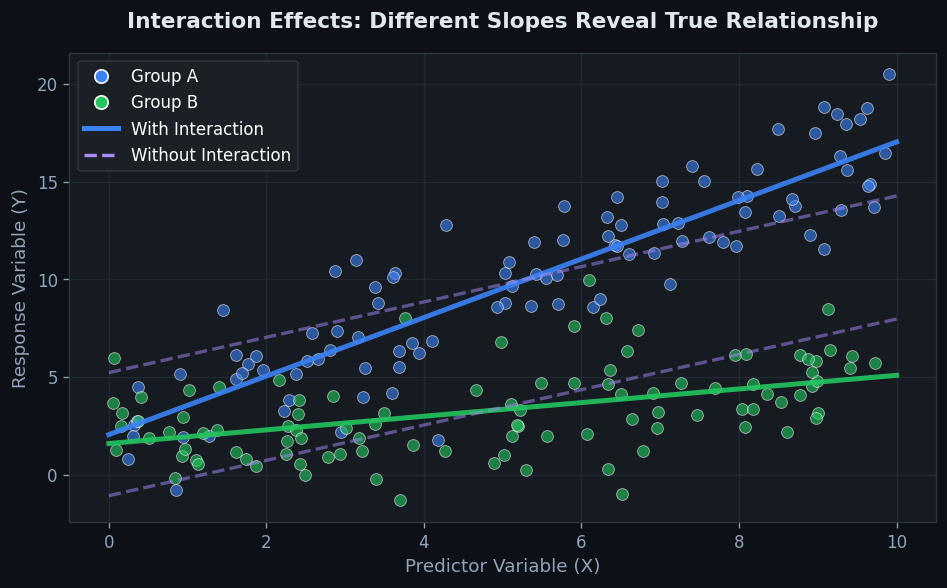
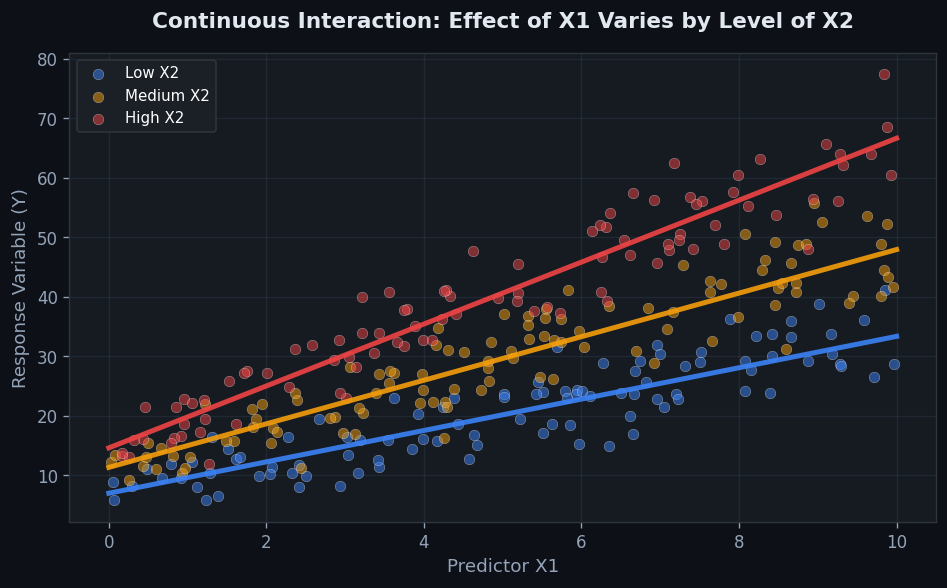

Interaction#


The biggest mistake I see is teams creating every possible interaction without domain knowledge first. Start with hypothesis-driven interactions based on what actually makes sense in your problem space, because blindly multiplying features explodes your dimensionality and destroys model interpretability. A single well-chosen interaction between price and seasonality will outperform fifty random feature crosses that just memorize noise.
The 60-Second Version#
What it does: Interaction captures when the effect of one variable depends on the value of another, rather than assuming all variables work independently.
When to use it: When you suspect the impact of one business driver changes depending on another—like pricing effects differing by customer segment, or marketing channels performing differently across seasons.
What you get back: New features that multiply or combine existing variables, letting your model recognize and exploit these conditional relationships for better predictions and insights.
At a Glance
Difficulty |
Moderate |
Typical runtime |
Seconds on 100K rows |
What you bring |
Two or more variables you suspect work together differently than apart |
What you get |
Engineered features encoding joint effects, ready for modelling |
Heuristix bucket |
Explore — Shaping & Transforming Data |
Interactions multiply model complexity quickly—add them only when domain knowledge or exploratory analysis suggests specific variables genuinely modify each other’s effects.
Learning Objectives#
After reading this chapter, a business user will be able to:
Identify business scenarios where the effect of one factor (like marketing spend or pricing) depends on the level of another factor (like customer segment or seasonality), signaling the need for interaction terms.
Interpret interaction coefficients and visualizations to explain to stakeholders how the relationship between a predictor and outcome changes across different conditions or groups.
Decide which customer segments, product combinations, or operational contexts warrant differentiated strategies based on detected interaction effects in historical data.
After reading this chapter, a data scientist will be able to:
Construct and encode interaction terms between continuous, categorical, and mixed variable types, handling categorical expansion and centering to avoid multicollinearity issues.
Evaluate whether adding interaction terms improves model performance using cross-validation, while balancing the trade-off between model complexity and interpretability.
Diagnose spurious interactions caused by outliers, confounding variables, or insufficient sample size in subgroups, and apply appropriate remediation strategies.
Overview#
Interaction terms are engineered features that capture the joint effect of two or more predictor variables on a response variable, beyond their individual additive contributions. The core purpose of interaction modelling is to represent situations where the effect of one variable depends on the level of another—a phenomenon known as effect modification or moderation. Interaction belongs to the family of feature engineering and model specification techniques, bridging exploratory data analysis and predictive modelling by encoding non-additive relationships directly into the feature space.
When to Use This#
Use when domain knowledge suggests conditional effects: In pricing models, the effect of a discount may depend on customer segment—loyal customers respond differently to price changes than new customers.
Use when exploring moderating relationships: When testing whether the relationship between marketing spend and sales varies by region, channel, or season, interaction terms quantify this moderation.
Use when additive models show systematic residual patterns: If residual plots reveal that prediction errors correlate with combinations of features (e.g., large errors for high-income customers in urban areas), interactions may capture missing structure.
Use when building interpretable models requiring explicit effect decomposition: In regulated industries such as insurance or healthcare, stakeholders often require models where the contribution of each factor—including joint effects—is transparent and auditable.
Use when polynomial or nonlinear effects are suspected between continuous variables: The product of two continuous variables captures a specific form of nonlinearity that main effects alone cannot represent.
Use when categorical variables have group-specific slopes: If different product categories exhibit different price elasticities, a price × category interaction encodes category-specific coefficients efficiently.
Do NOT use when sample size is insufficient: Interaction terms fragment the data; estimating a two-way interaction between variables with \(k_1\) and \(k_2\) levels requires adequate observations in all \(k_1 \times k_2\) cells.
Do NOT use when collinearity is already severe: Interaction terms are often highly correlated with their constituent main effects, exacerbating multicollinearity and inflating standard errors.
Do NOT use as a substitute for proper nonlinear modelling: When the true relationship is smoothly nonlinear (e.g., logarithmic, sigmoidal), splines or transformations may be more appropriate than multiplicative interactions.
Do NOT use blindly in high-dimensional settings: Testing all pairwise interactions among \(p\) features creates \(\binom{p}{2}\) additional terms, dramatically increasing the risk of spurious findings and overfitting.
Questions This Answers#
Understanding What’s Really Driving Performance#
Why does our email campaign work great for customers under 30 but flop completely for older segments?
Is the 15% discount we’re offering actually more effective when paired with free shipping, or are we just leaving money on the table?
Why do our sales reps in the Northeast close 40% more deals than those in the Southwest—is it the territory, the team, or something else entirely?
Does our premium pricing strategy hurt us more in competitive markets than in markets where we’re the only player?
Why does increasing ad spend boost our conversion rate in urban areas but barely move the needle in rural regions?
Predicting What Will Actually Work#
If we launch this new loyalty program, will it perform better with our high-frequency customers or our high-spend customers?
Will hiring experienced managers improve team performance more in our struggling stores or our already successful ones?
Should we expect the same 8% lift from our promotional strategy in Q4 that we saw in Q2, or does seasonality change everything?
If we raise prices by 10%, which customer segments will we lose and which will stick around?
Deciding Where to Invest and How to Act#
Should we train all our support agents on upselling, or does that only work when customer satisfaction is already high?
Where should we spend our next $500K in marketing—doubling down on what works everywhere, or targeting specific channel-region combinations?
Does it make sense to roll out our new product features to all markets at once, or will some customer types adopt faster than others?
Should we standardize our sales approach across all regions, or customize based on local market conditions?
Is our customer retention problem really about price sensitivity, or does it depend on how long they’ve been with us?
How It Works#
Imagine you’re trying to predict how long it takes someone to cook dinner. You notice that vegetarians take 30 minutes on average, while meat-eaters take 45 minutes. You also notice that people who use a slow cooker take longer than those who don’t. But here’s what gets interesting: when a meat-eater uses a slow cooker, their dinner takes 4 hours, but when a vegetarian uses one, it only takes 2 hours. The slow cooker’s effect completely depends on what type of food you’re cooking. You can’t just add “vegetarian effect” plus “slow cooker effect”—the two factors multiply or modify each other’s impact. That’s interaction.
BEFORE INTERACTION AFTER INTERACTION
Original Features New Combined Features
┌──────────┬────────────┐ ┌──────────┬────────────┬─────────────┐
│ Diet │ SlowCooker │ │ Diet │ SlowCooker │ Diet×Cooker │
├──────────┼────────────┤ ├──────────┼────────────┼─────────────┤
│ Veg │ No │ → │ Veg │ No │ 0 │
│ Veg │ Yes │ → │ Veg │ Yes │ 1 │
│ Meat │ No │ → │ Meat │ No │ 0 │
│ Meat │ Yes │ → │ Meat │ Yes │ 1 │
└──────────┴────────────┘ └──────────┴────────────┴─────────────┘
↓
Model learns separate effects:
• Veg × Yes combo → +90 min
• Meat × Yes combo → +195 min
Step 1: Identify candidate pairs Start by selecting two (or more) features you suspect might work together in non-obvious ways. These are usually features where you have domain knowledge suggesting “the effect of A probably changes depending on B.” In our cooking example, you’d identify diet type and cooking method as candidates because the impact of slow-cooking clearly differs by ingredient type.
Step 2: Create the interaction feature Multiply the two features together to create a new column. If both features are categorical (like “vegetarian” and “slow cooker”), you create a combined category. If they’re numerical (like “oven temperature” and “cooking time”), you multiply the actual values. This new feature captures “when both conditions occur together.”
Step 3: Add it to your dataset Insert this new interaction column alongside your original features. You’re not replacing anything—you’re expanding your dataset with an additional variable. Now your model has access to both the individual effects and the combined effect.
Step 4: Let the model learn separate weights When you train your model, it learns different coefficients for the original features and the interaction term. The diet coefficient captures the baseline diet effect, the slow cooker coefficient captures its baseline effect, and the interaction coefficient captures the extra boost (or penalty) when both occur together. The model can now say “being vegetarian reduces time by 15 minutes, using a slow cooker adds 60 minutes, but being a vegetarian who uses a slow cooker adds an extra 45 minutes beyond those individual effects.”
The key insight: Interaction terms let models capture conditional relationships where the impact of one factor fundamentally changes depending on the presence or level of another, revealing synergies and dependencies that simple addition cannot represent.
The Intuition#
Imagine you are studying how temperature affects ice cream sales. On its own, higher temperature generally increases sales. Now introduce a second variable: whether it is a weekday or weekend. If the temperature effect is the same on weekdays and weekends, we say the effects are additive—knowing the day type and the temperature independently tells us what to expect. But if hot weather boosts sales much more on weekends (when people are outdoors and have leisure time) than on weekdays, the two variables interact. The weekend “unlocks” additional sensitivity to temperature that weekdays do not. An interaction term captures this conditional amplification or dampening.
A helpful analogy is a combination lock. Each dial contributes to opening the lock, but the lock only opens when the dials are set to the right combination. Similarly, some outcomes only manifest—or manifest more strongly—when multiple conditions align. A medication might be effective only in patients with a particular genetic marker; a promotional campaign might lift sales only during certain seasons. The interaction term is the mathematical device that lets our model “know” about these combinations.
Formally, when we include only main effects, we assume that shifting one variable shifts the predicted outcome by a fixed amount, regardless of where the other variables sit. Including an interaction relaxes this assumption: we allow the slope of one variable to be a function of another variable. This is a fundamental modelling choice, not merely a technical adjustment. Getting it right means our model reflects how the world actually works; getting it wrong means we either miss important structure or inject noise.
The Mathematics#
Problem Setup and Notation#
Let \(y\) denote a continuous response variable and let \(x_1, x_2, \ldots, x_p\) denote predictor variables, which may be continuous or categorical (appropriately encoded). In the standard linear regression framework with main effects only, we model:
where \(\varepsilon \sim \mathcal{N}(0, \sigma^2)\) under classical assumptions.
The key assumption embedded in this specification is additivity: the partial effect of \(x_j\) on \(y\), given by \(\partial \mathbb{E}[y]/\partial x_j = \beta_j\), does not depend on any other predictor.
Introducing the Interaction Term#
To relax additivity between \(x_1\) and \(x_2\), we introduce their product as an additional feature:
Here \(\beta_{12}\) is the interaction coefficient. The partial effect of \(x_1\) now becomes:
This is no longer constant—it varies linearly with \(x_2\). Symmetrically:
Interpretation of Coefficients#
\(\beta_1\): the effect of a one-unit increase in \(x_1\) when \(x_2 = 0\).
\(\beta_2\): the effect of a one-unit increase in \(x_2\) when \(x_1 = 0\).
\(\beta_{12}\): the change in the slope of \(x_1\) for a one-unit increase in \(x_2\) (and vice versa).
Warning
When \(x_1 = 0\) or \(x_2 = 0\) is outside the observed data range, \(\beta_1\) and \(\beta_2\) represent extrapolations and may lack meaningful interpretation. Centering predictors (subtracting their means) ensures main effects are evaluated at typical values.
Centering for Interpretability#
Define centred variables:
The model becomes:
Now:
\(\beta_1^c\): effect of \(x_1\) at the mean of \(x_2\).
\(\beta_2^c\): effect of \(x_2\) at the mean of \(x_1\).
\(\beta_{12}^c = \beta_{12}\): the interaction coefficient is unchanged by centering.
Centering also reduces collinearity between interaction terms and main effects.
Higher-Order and Multi-Way Interactions#
For three variables, a three-way interaction is:
The three-way term \(\beta_{123}\) captures whether the two-way interaction between \(x_1\) and \(x_2\) itself varies with \(x_3\).
Categorical Variables#
When \(x_2\) is categorical with \(K\) levels, it is represented by \(K - 1\) dummy variables \(d_2, d_3, \ldots, d_K\) (with level 1 as reference). The interaction between continuous \(x_1\) and categorical \(x_2\) yields \(K - 1\) interaction terms:
This specification allows each category to have its own intercept (\(\gamma_k\)) and its own slope with respect to \(x_1\) (\(\beta_1 + \delta_k\) for category \(k\)).
Estimation#
Under ordinary least squares, we minimise the residual sum of squares:
where \(\mathbf{X}\) now includes the interaction column(s). The closed-form solution remains:
Testing for Interaction#
The null hypothesis \(H_0: \beta_{12} = 0\) is tested via the \(t\)-statistic:
For multiple interaction terms, use an \(F\)-test comparing the full model (with interactions) to the reduced model (without):
where \(q\) is the number of interaction terms being tested.
Assumptions#
Linearity in parameters: The model is linear in \(\boldsymbol{\beta}\), even though it is nonlinear in the original features.
Independence: Observations are independent.
Homoscedasticity: \(\text{Var}(\varepsilon) = \sigma^2\) constant.
Normality (for inference): \(\varepsilon \sim \mathcal{N}(0, \sigma^2)\).
No perfect multicollinearity: \(\mathbf{X}^\top \mathbf{X}\) is invertible.
Edge Cases#
Sparse cells: In categorical × categorical interactions, some combinations may have zero or few observations, leading to inestimable coefficients.
Extrapolation danger: Interaction surfaces can produce extreme predictions outside the convex hull of training data.
Collinearity: \(x_1 x_2\) is mechanically correlated with \(x_1\) and \(x_2\), especially when variables are not centred or when distributions are skewed.
Understanding the Mathematics#
The Additive Model (Without Interaction)#
The equation:
Read it aloud:
“The outcome equals a baseline value, plus the first coefficient times the first predictor, plus the second coefficient times the second predictor, plus some random noise.”
What each symbol means:
\(y\) = the outcome we’re predicting (e.g., sales revenue)
\(\beta_0\) = the baseline value when both predictors are zero
\(\beta_1\) = how much \(y\) changes per unit increase in \(x_1\), holding \(x_2\) constant
\(x_1\) = first predictor variable (e.g., advertising spend)
\(\beta_2\) = how much \(y\) changes per unit increase in \(x_2\), holding \(x_1\) constant
\(x_2\) = second predictor variable (e.g., website traffic)
\(\varepsilon\) = random error we can’t explain
A concrete numerical example:
Suppose we’re predicting monthly sales. Our model gives us \(\beta_0 = 10{,}000\), \(\beta_1 = 2.5\) (for advertising in thousands), and \(\beta_2 = 0.15\) (for website visits). If we spend $8,000 on advertising and get 40,000 website visits:
We predict \(16,020 in sales. Notice that the effect of advertising is always \)2.50 per thousand spent, regardless of traffic levels.
Why this equation matters:
This additive model assumes each variable works independently—but in reality, high advertising might amplify the value of each website visitor, an assumption this formula cannot capture.
The Interaction Model#
The equation:
Read it aloud:
“The outcome equals a baseline value, plus the first coefficient times the first predictor, plus the second coefficient times the second predictor, plus an interaction coefficient times the product of both predictors, plus some random noise.”
What each symbol means:
\(y\) = the outcome (sales revenue)
\(\beta_0\) = baseline when both predictors are zero
\(\beta_1\) = the effect of \(x_1\) when \(x_2 = 0\)
\(x_1\) = first predictor (advertising spend)
\(\beta_2\) = the effect of \(x_2\) when \(x_1 = 0\)
\(x_2\) = second predictor (website traffic)
\(\beta_3\) = the interaction coefficient—how much the effect of \(x_1\) changes per unit of \(x_2\)
\(x_1 x_2\) = the product of both predictors
\(\varepsilon\) = random error
A concrete numerical example:
Using the same scenario but now with \(\beta_3 = 0.0003\). With $8,000 advertising and 40,000 visits:
The interaction term \((8 \times 40{,}000 \times 0.0003 = 96)\) adds $96 to our prediction. This captures the synergy: advertising becomes more effective when traffic is high.
Why this equation matters:
The interaction term lets the effectiveness of one variable depend on another’s level—modeling reality where marketing spend and web traffic amplify each other rather than just adding up.
The Conditional Effect#
The equation:
Read it aloud:
“The effect of the first predictor on the outcome equals its main coefficient plus the interaction coefficient times the current level of the second predictor.”
What each symbol means:
\(\frac{\partial y}{\partial x_1}\) = the rate at which \(y\) changes as we change \(x_1\)
\(\beta_1\) = the baseline effect of \(x_1\)
\(\beta_3\) = how much that effect grows per unit of \(x_2\)
\(x_2\) = the current value of the second predictor
A concrete numerical example:
With our coefficients (\(\beta_1 = 2.5\), \(\beta_3 = 0.0003\)), the effectiveness of advertising depends on traffic. At 20,000 visits:
Each thousand dollars in advertising generates $8.50 in sales. At 60,000 visits:
Now each thousand generates $20.50. The return on advertising more than doubles as traffic increases.
Why this equation matters:
This formula reveals that interactions create variable returns—we can optimize spending by understanding how effectiveness shifts with context, not just average effects.
The Big Picture#
The mathematics of interaction modeling fundamentally extends linear regression to capture synergy and context-dependence between variables. Where standard models assume effects simply add up, interaction terms multiply predictors together, creating a flexible representation where one variable’s influence can amplify, diminish, or reverse depending on another’s value. This approach was chosen because real-world relationships rarely respect the independence assumption—drug effectiveness depends on dosage timing, marketing ROI depends on market conditions, and user engagement depends on feature combinations. In one intuitive sentence: interaction mathematics lets variables talk to each other instead of speaking to the outcome in isolation.
Python Implementation#
import numpy as np
import pandas as pd
import statsmodels.api as sm
from sklearn.preprocessing import PolynomialFeatures
from sklearn.linear_model import LinearRegression
import matplotlib.pyplot as plt
# -----------------------------
# Example 1: Manual Interaction Term in Statsmodels
# -----------------------------
# Generate synthetic data: sales depend on price, promotion, and their interaction
np.random.seed(42)
n = 500
price = np.random.uniform(5, 20, n) # price in dollars
promotion = np.random.binomial(1, 0.4, n) # 1 if promotion active, 0 otherwise
# True model: sales = 100 - 3*price + 20*promotion + 1.5*price*promotion + noise
# Interpretation: promotions boost baseline sales AND reduce price sensitivity
true_intercept = 100
true_price_effect = -3
true_promo_effect = 20
true_interaction = 1.5
sales = (true_intercept
+ true_price_effect * price
+ true_promo_effect * promotion
+ true_interaction * price * promotion
+ np.random.normal(0, 5, n))
df = pd.DataFrame({'price': price, 'promotion': promotion, 'sales': sales})
# Create interaction term manually
df['price_x_promotion'] = df['price'] * df['promotion']
# Fit model with statsmodels for detailed inference
X = df[['price', 'promotion', 'price_x_promotion']]
X = sm.add_constant(X) # add intercept
y = df['sales']
model = sm.OLS(y, X).fit()
print("="*60)
print("Example 1: Manual Interaction Term (Statsmodels)")
print("="*60)
print(model.summary())
# Interpretation:
# - 'price' coefficient: effect of price when promotion=0
# - 'promotion' coefficient: effect of promotion when price=0 (extrapolation!)
# - 'price_x_promotion': how much the price effect changes when promotion=1
# -----------------------------
# Example 2: Centred Variables for Better Interpretation
# -----------------------------
# Centre price to make main effects interpretable at mean price
df['price_centred'] = df['price'] - df['price'].mean()
df['price_centred_x_promotion'] = df['price_centred'] * df['promotion']
X_centred = df[['price_centred', 'promotion', 'price_centred_x_promotion']]
X_centred = sm.add_constant(X_centred)
model_centred = sm.OLS(y, X_centred).fit()
print("\n" + "="*60)
print("Example 2: Centred Interaction Term")
print("="*60)
print(model_centred.summary())
# Now 'promotion' coefficient is the effect at mean price (more meaningful)
# -----------------------------
# Example 3: Continuous x Continuous Interaction with sklearn
# -----------------------------
# New synthetic data: conversion rate depends on ad spend, page load time, and interaction
np.random.seed(123)
n = 1000
ad_spend = np.random.uniform(100, 5000, n) # dollars
load_time = np.random.uniform(1, 10, n) # seconds
# True model: high ad spend with slow load time hurts conversions
conversion_rate = (0.1
+ 0.00005 * ad_spend
- 0.02 * load_time
- 0.000005 * ad_spend * load_time
+ np.random.normal(0, 0.02, n))
conversion_rate = np.clip(conversion_rate, 0, 1)
df2 = pd.DataFrame({
'ad_spend': ad_spend,
'load_time': load_time,
'conversion_rate': conversion_rate
})
# Use PolynomialFeatures to generate interaction (degree=2, interaction_only=True)
poly = PolynomialFeatures(degree=2, interaction_only=True, include_bias=False)
X_poly = poly.fit_transform(df2[['ad_spend', 'load_time']])
print("\n" + "="*60)
print("Example 3: sklearn PolynomialFeatures for Interaction")
print("="*60)
print(f"Feature names: {poly.get_feature_names_out()}")
# Fit linear regression
lr = LinearRegression()
lr.fit(X_poly, df2['conversion_rate'])
print(f"\nCoefficients:")
for name, coef in zip(poly.get_feature_names_out(), lr.coef_):
print(f" {name}: {coef:.8f}")
print(f" Intercept: {lr.intercept_:.4f}")
# The negative interaction coefficient confirms:
# high ad spend with high load time reduces conversions more than expected additively
Visualisations#


Using This in Heuristix#
Data Inputs#
Connect a tabular dataset node to the Interaction node. Required column types:
Input Type |
Description |
|---|---|
Numeric columns |
Continuous variables for interaction (will be multiplied) |
Categorical columns |
Will be automatically dummy-encoded before creating interactions |
Target column |
Optional; used for automated interaction selection via statistical tests |
Configuration Parameters#
| Parameter | Type | Description | |
Config Recipes#
Recipe 1: Quick Screening for Candidate Interactions#
When to use: Initial exploration phase with 10–50 features where you need to identify promising interaction pairs without exhaustive search.
Settings:
Parameter |
Value |
Why |
|---|---|---|
|
|
Pairwise only—higher-order interactions rarely interpretable in exploration |
|
|
Limits combinatorial explosion; focus on top features by univariate importance |
|
|
Bonferroni-adjusted alpha for multiple comparisons |
|
|
Fast F-test for categorical×continuous and categorical×categorical pairs |
|
|
Single-split validation sufficient for screening |
What you get: A ranked shortlist of 5–15 interaction candidates in under 60 seconds for most datasets.
Trade-off: May miss subtle interactions masked by noise in single train/test split; no protection against overfitting artifacts.
Recipe 2: Production-Grade Interaction Selection#
When to use: Final model deployment where false positives carry business cost and regulatory scrutiny requires defensible feature engineering.
Settings:
Parameter |
Value |
Why |
|---|---|---|
|
|
Maintainability constraint for production monitoring |
|
|
Distribution-free; robust to non-normal residuals |
|
|
Stable estimates despite computational cost |
|
|
Controls false discovery rate at 5% across all tests |
|
|
Interaction must activate in ≥5% of observations to avoid instability |
|
|
Re-estimates main effects after each interaction added |
What you get: Conservatively selected interactions with <5% expected false positives, reproducible across bootstrap samples.
Trade-off: 10–50× slower than screening; may exclude weak-but-real interactions below stringent thresholds.
Recipe 3: High-Cardinality Categorical Interactions#
When to use: E-commerce/web analytics with categorical features like user_segment × product_category where naïve encoding creates thousands of sparse dummy columns.
Settings:
Parameter |
Value |
Why |
|---|---|---|
|
|
Maps categories to target mean; reduces dimensionality pre-interaction |
|
|
Collapses rare category pairs into |
|
|
Three-way categorical interactions are uninterpretable |
|
|
L1 penalty performs implicit selection among encoded interaction terms |
|
|
Light regularization—categorical interactions often have large true effects |
What you get: Stable interaction terms even with 50+ categorical levels per feature; automatic handling of unseen category pairs at inference.
Trade-off: Target encoding leaks label information; requires careful nested CV or use only for tree-based models.
Recipe 4: Time-Varying Effect Modification#
When to use: Panel data or time series where a predictor’s effect changes across time periods (e.g., economic_shock × industry where impact differs in recession vs. expansion).
Settings:
Parameter |
Value |
Why |
|---|---|---|
|
|
Forces all main effects to interact with temporal indicator |
|
|
Sin/cos transforms for seasonal patterns |
|
|
Estimates local interactions within 90-day windows |
|
|
Window slides every 30 days for smooth transitions |
What you get: Time-adaptive coefficients that capture regime shifts without manually segmenting data.
Trade-off: Requires dense temporal coverage; gaps >2× window size break continuity assumptions.
Business Applications#
Financial Services
A regional credit card issuer in the Midwest struggled with fraud detection models that produced high false-positive rates during holiday shopping periods, blocking legitimate high-value transactions and frustrating premium cardholders. By introducing an interaction term between transaction amount and time-of-day, the model learned that \(800 purchases at 2am were suspicious, while the same amount at 6pm during December was normal cardholder behaviour. This interaction-enhanced model reduced false positives by 34% while maintaining fraud catch rates, saving an estimated \)2.1M annually in customer service costs and recovered revenue from unblocked legitimate transactions.
Retail
An omnichannel fashion retailer with 450 stores discovered their markdown optimisation model was leaving money on the table by treating online and offline inventory identically. When they added an interaction between inventory-days-on-hand and channel type, the model revealed that online products could sustain full price 18 days longer than in-store equivalents before requiring discounts—customers browsing online exhibited different patience thresholds. This channel-inventory interaction improved gross margin by 2.7 percentage points, translating to $8.3M additional annual profit without changing assortment strategy.
Healthcare
A hospital network operating twelve facilities sought to predict patient readmission risk but found standard models performed poorly across their diverse patient population. Introducing an interaction between age and number of comorbidities revealed that younger patients with multiple conditions carried disproportionately higher readmission risk than the additive effects alone suggested—likely due to non-compliance or socioeconomic factors. This interaction term lifted model AUC from 0.72 to 0.81, enabling care coordinators to prioritise 2,300 additional high-risk patients annually for intensive follow-up, reducing 30-day readmissions by 19%.
Insurance
A national auto insurer noticed their pricing model systematically underpriced certain customer segments while overpricing others, creating adverse selection problems. By incorporating an interaction between driver age and vehicle age, they discovered that young drivers with older vehicles represented far higher claim frequency than either variable alone predicted—older vehicles driven by young adults showed 2.8× baseline risk versus 1.4× predicted by additive terms. Repricing based on this interaction improved loss ratio by 5.2 points and reduced policy cancellations among profitable middle-aged drivers by 12%.
Manufacturing
A semiconductor fabrication plant producing specialised chips experienced yield variability their quality engineers couldn’t explain through main effects alone. Adding an interaction between furnace temperature and atmospheric humidity in their defect prediction model revealed that moderate temperatures were safe only at low humidity; the combination of moderate heat and moderate moisture—each individually acceptable—created 67% more defects. This discovery enabled dynamic process adjustments that increased overall yield from 73% to 89%, worth approximately $14M annually in reduced scrap.
Logistics
A last-mile delivery company with 2,500 drivers found their estimated time of arrival predictions consistently missed the mark in certain scenarios, eroding customer trust. Introducing an interaction between time-of-day and neighbourhood density revealed that urban deliveries were faster during lunch hours when traffic cleared, while suburban deliveries slowed as drivers returned home. This interaction term reduced ETA error from 22 minutes to 9 minutes on average, cutting “where’s my package?” calls by 41% and improving customer satisfaction scores from 3.8 to 4.4 out of 5.
Marketing
A subscription streaming service found their churn prediction model failed to identify at-risk users among their most engaged segment. An interaction between content consumption hours and genre diversity showed that users watching 20+ hours monthly but concentrated in a single genre were actually high flight risks—signalling impending content exhaustion rather than loyalty. Targeted content recommendations to this interaction-defined segment reduced churn in the group from 8.2% to 4.7% monthly, retaining 18,000 subscribers worth $2.9M annual recurring revenue.
Telecommunications
A mobile network operator needed to optimise tower maintenance schedules but found equipment failure predictions unreliable. Creating an interaction between tower age and call volume variability revealed that older towers in high-variability areas (sporting venues, transit hubs) failed at 4.1× the rate of similar-aged towers with steady traffic. This interaction-informed maintenance schedule prevented an estimated 340 outages annually and reduced emergency repair costs by $1.8M.
SaaS/Technology
A B2B analytics platform with 12,000 enterprise users noticed conversion from trial to paid varied wildly despite similar usage metrics. An interaction between number of team members invited and data sources connected revealed that single-user trials with many integrations rarely converted, while multi-user trials with even one integration converted at 3.6× baseline rates. Refocusing sales outreach based on this interaction pattern lifted trial-to-paid conversion from 11% to 19%.
Worked Example#
Sarah Chen, a senior data scientist at Meridian Insurance, was midway through her second coffee when her director dropped by her desk. “We’re spending a fortune on direct mail campaigns,” he said, pulling up a chair. “The marketing team swears that younger customers respond better to promotional offers, but the ROI numbers aren’t backing it up. We need to understand what’s actually driving conversions before the next budget cycle.” The company had spent $2.3 million on direct mail in the previous quarter alone, and every percentage point improvement in response rate meant real money.
Sarah pulled together six months of campaign data—47,000 customer records with demographics, offer details, and response outcomes. The dataset was messier than she’d hoped: missing income data for about 8% of customers, inconsistent coding of the discount levels, and three customers somehow listed as 142 years old. After the usual cleaning, she had a workable sample:
customer_id |
age |
income |
discount_pct |
responded |
|---|---|---|---|---|
C10234 |
28 |
45000 |
10 |
0 |
C10891 |
52 |
78000 |
20 |
1 |
C11203 |
34 |
52000 |
10 |
1 |
C11547 |
61 |
95000 |
30 |
1 |
C12009 |
29 |
38000 |
20 |
0 |
The marketing team’s theory was simple: younger customers were more price-sensitive and would jump at discounts. But Sarah suspected something more nuanced was happening. Age and discount level might work together in ways that a simple additive model wouldn’t capture.
She opened her analysis notebook and configured an interaction term between age and discount percentage. Her thinking was straightforward: if the effect of a 20% discount is fundamentally different for a 25-year-old versus a 60-year-old, the model needed to know that. She created the interaction as a simple product—age * discount_pct—which would let her logistic regression model estimate how the discount effect changed across the age spectrum.
import pandas as pd
import numpy as np
from sklearn.linear_model import LogisticRegression
from sklearn.preprocessing import StandardScaler
# Load cleaned campaign data
df = pd.read_csv('campaign_data_clean.csv')
# Create interaction term
df['age_discount_interaction'] = df['age'] * df['discount_pct']
# Prepare features - both main effects and interaction
X = df[['age', 'income', 'discount_pct', 'age_discount_interaction']]
y = df['responded']
# Standardize for interpretability
scaler = StandardScaler()
X_scaled = scaler.fit_transform(X)
# Fit logistic regression
model = LogisticRegression(random_state=42)
model.fit(X_scaled, y)
# Extract coefficients
coef_df = pd.DataFrame({
'feature': X.columns,
'coefficient': model.coef_[0]
})
print(coef_df.sort_values('coefficient', ascending=False))
The results stopped her mid-sip:
feature |
coefficient |
|---|---|
income |
0.423 |
discount_pct |
0.381 |
age_discount_interaction |
-0.562 |
age |
-0.089 |
The interaction term had the largest absolute coefficient in the model. The negative sign told a story the marketing team hadn’t anticipated: the effectiveness of discounts actually decreased with age. For younger customers, a 30% discount was powerfully persuasive. For customers over 55, the same discount barely moved the needle. Sarah ran the numbers: a 20% discount increased conversion probability by 8.3 percentage points for 30-year-olds, but only 2.1 percentage points for 60-year-olds.
This was the insight that mattered. The company had been sending the same high-discount offers to everyone, essentially wasting margin on older customers who would have responded to smaller incentives—or perhaps to entirely different appeals like service quality or stability messaging.
Three weeks later, Sarah presented to the VP of Marketing and the CFO. She showed them the interaction effect visualized as a heat map: conversion probability across age groups and discount levels. The recommendation was clear: segment the direct mail strategy. Send aggressive discount offers to customers under 40, moderate discounts to the 40-55 range, and for customers over 55, test value-proposition messaging with minimal discounting.
The company piloted the segmented approach in two regions. After eight weeks, overall response rates increased by 1.7 percentage points, while the average discount offered decreased by 4%. The CFO calculated it would save roughly $340,000 annually while improving conversion. The program went national the following quarter.
Looking back, Sarah wished she’d tested three-way interactions earlier—particularly adding income to the age-discount interaction, since the effect might vary by economic segment. She also realized she’d initially overlooked interaction effects between offer timing and customer tenure, which later analysis suggested might be just as important. But the core lesson held: the business had been operating on an oversimplified mental model, and a single interaction term revealed what hundreds of univariate analyses had missed.
Interpreting Your Results#
You’ve just added interaction terms to your model and now you’re staring at coefficients, p-values, and maybe some diagnostic plots. Here’s exactly what you’re looking at and what it means for your analysis.
Interaction Coefficients#
Plain-English meaning: An interaction coefficient tells you how much the relationship between one variable and your outcome changes when another variable increases by one unit. If you have Age × Income with a coefficient of 0.03, it means that for every additional $1,000 in income, the effect of each year of age on your outcome increases by 0.03 units.
Concrete benchmarks:
Coefficient magnitude relative to main effects < 0.2: Weak interaction, probably not worth the complexity
0.2–0.5: Moderate interaction, likely meaningful in context
> 0.5: Strong interaction, this is a key relationship to understand and communicate
Red flags:
Interaction coefficient is large but main effects are near zero → you’re likely capturing a spurious pattern or have severe multicollinearity
Sign of interaction contradicts domain knowledge (e.g., temperature × humidity interaction is negative when you know joint heat stress increases exponentially)
Interaction coefficient flips signs when you add/remove other variables → unstable, unreliable relationship
Statistical Significance (p-values)#
Plain-English meaning: The p-value tells you whether this interaction term is providing information beyond random noise. A p-value of 0.03 means there’s a 3% chance you’d see an interaction coefficient this large if the true interaction effect were zero.
Concrete benchmarks:
p < 0.01: Strong evidence for interaction, proceed with confidence
0.01–0.05: Moderate evidence, worth keeping if it makes domain sense
0.05–0.10: Marginal, only retain if you have strong theoretical reasons
> 0.10: Insufficient evidence, drop the interaction term
Red flags:
All interactions are significant → you’re probably overfitting or fishing for patterns
P-value is significant but confidence interval spans zero → sample size issue or outlier-driven
Main effects become non-significant after adding interactions → complete mediation or multicollinearity problem
Model Fit Improvement (R², AIC, BIC)#
Plain-English meaning: These metrics tell you whether adding interaction terms actually helps your model explain or predict the outcome better.
Concrete benchmarks for R² improvement:
< 0.01 increase: Interaction adds negligible explanatory power
0.01–0.05 increase: Modest improvement, evaluate against complexity cost
> 0.05 increase: Substantial improvement, interaction is capturing real signal
For AIC/BIC change (lower is better):
Decrease of < 2: Essentially no improvement
Decrease of 2–10: Positive evidence for keeping interaction
Decrease of > 10: Strong evidence, interaction meaningfully improves model
Red flags:
R² increases but AIC/BIC increase → you’re overfitting, the interaction doesn’t justify its complexity
Training R² jumps by 0.15+ but validation R² stays flat → severe overfitting
BIC increases but AIC decreases → interaction helps fit but probably won’t generalize
Interaction Plots#
Plain-English meaning: These visualize how the relationship between X₁ and your outcome changes at different levels of X₂. Non-parallel lines mean interaction is present; crossing lines indicate particularly strong interaction.
Reading the plot:
Parallel lines: No interaction, just additive effects
Lines diverge/converge but don’t cross: Moderate interaction, effect magnitude changes
Lines cross: Strong interaction, effect direction changes depending on the other variable
Red flags:
Lines cross at extreme values only → interaction driven by outliers
Huge confidence bands around interaction lines → unstable estimates, need more data
Pattern reverses when you split data in half → spurious interaction
Reading Multiple Outputs Together#
A trustworthy interaction shows: moderate-to-large coefficient (> 0.2 relative to main effects) + p < 0.05 + AIC decrease > 2 + interaction plot with clearly non-parallel lines that match domain expectations.
A spurious interaction shows: large coefficient + p < 0.05 + but AIC increases OR confidence intervals are enormous OR the pattern disappears in holdout data.
Sanity Check Checklist#
Do the main effects remain stable? If coefficients flip or vanish, you have multicollinearity
Does the interaction make domain sense? Can you tell a plausible story for why these variables would interact?
Is the sample size adequate? Rule of thumb: need 10–15 observations per parameter, including interactions
Do results hold in a train/test split? Interaction coefficients shouldn’t change by more than 30%
Are you comparing standardized or raw coefficients appropriately? Standardize before creating interactions for fair magnitude comparison
Good Enough to Act On?#
Your interaction is actionable when you see: (1) p-value < 0.05, (2) AIC decrease > 2, (3) coefficient magnitude > 0.2× main effects, and (4) the pattern replicates in holdout data. If you hit three of these four criteria and the interaction aligns with domain knowledge, stop analyzing and start using it in decisions or predictions.
Decision Guidance#
What This Result Is Telling You#
When your analysis reveals a significant interaction effect, it’s telling you that your business operates differently under different conditions—and that one-size-fits-all strategies will leave money on the table. For instance, if you find an interaction between advertising spend and customer segment, it means that doubling your ad budget won’t produce the same return across all customer groups. Some segments might respond explosively to increased spending while others show diminishing returns immediately. This isn’t a statistical curiosity; it’s actionable intelligence about where to concentrate resources for maximum impact.
The presence of interaction means your decision rules need to be conditional. A pricing strategy that works brilliantly for young urban customers might actively harm retention among suburban families. A promotion that drives sales during holiday seasons could fall flat in summer months. When interaction terms are statistically significant and materially large, they’re revealing distinct operational realities that require distinct strategies. Ignoring these interactions means you’re averaging across fundamentally different situations and optimizing for none of them effectively.
The business value lies not in the interaction term itself, but in the segmented strategies it justifies. A significant interaction gives you permission—and evidence—to stop treating your market, your workforce, or your operations as homogeneous. It validates investing in differentiated approaches, customized campaigns, and context-specific tactics that would otherwise seem unnecessarily complex.
Decision Points#
If you see this… |
It means… |
Recommended action |
Who acts on this |
|---|---|---|---|
Interaction coefficient magnitude exceeds 20% of main effects, p-value < 0.05, and applies to controllable variables (e.g., price × channel) |
The combined effect is large enough to justify strategy differentiation and you can act on it |
Develop separate strategies for each combination; allocate budget proportionally to interaction strength |
Marketing Director, Product Manager |
Interaction is significant (p < 0.05) but involves uncontrollable variables (e.g., weather × customer age) |
You can predict outcomes better but can’t manipulate the levers |
Use for forecasting and scenario planning; adjust inventory or staffing ahead of predictable conditions |
Operations Manager, Supply Chain Lead |
Interaction effect shows opposing signs across segments (positive for A, negative for B) |
The same action will help one group while harming another |
Create completely separate decision rules; never apply averaged approach across these segments |
General Manager, Strategy Lead |
Multiple interaction terms present with variance inflation factors > 5 |
Your model may be overfitting or variables are too correlated to interpret cleanly |
Simplify model; test performance on holdout data before deployment |
Data Science Lead, Analytics Manager |
When to Proceed vs. Investigate Further#
Proceed with confidence when:
Interaction explains ≥10% additional variance beyond main effects alone (ΔR² ≥ 0.10)
Effect is consistent across multiple validation samples or time periods
Business domain experts confirm the interaction aligns with operational reality
Cost of implementing differentiated strategies is lower than expected incremental benefit
Proceed with caution when:
Interaction is statistically significant (p < 0.05) but explains <5% additional variance
Sample sizes within interaction subgroups fall below 100 observations
Interaction appears in exploratory analysis but wasn’t hypothesized from business knowledge
Investigate before acting when:
Interaction effect reverses direction across different subsets of your data
Confidence intervals for the interaction coefficient span zero or cross meaningful business thresholds
Interaction involves three or more variables simultaneously, making interpretation unclear
Do not use these results yet when:
Your dataset contains fewer than 30 observations per interaction cell
Correlation between interaction term and main effects exceeds 0.80
Interaction contradicts established domain knowledge without a compelling explanation
The Cost of Getting This Wrong#
Misinterpreting interaction effects leads to catastrophic resource misallocation disguised as data-driven decision-making. A retail chain that misses a negative interaction between promotion intensity and store size might roll out aggressive discounting across all locations, inadvertently destroying margins at large-format stores where customers were already buying at full price. A software company that ignores the interaction between feature complexity and user tenure could invest millions in advanced capabilities that delight power users but create a learning curve that drives away newcomers—the very segment needed for growth. Perhaps most dangerous is the false positive: acting on a spurious interaction by fragmenting your marketing into dozens of micro-campaigns, each too small to achieve statistical power in testing, burning budget on complexity that delivers no actual lift. The visible cost is wasted spending, but the hidden cost is opportunity—the months spent optimizing the wrong variables while competitors capture market share with simpler, correctly-targeted strategies.
Common Pitfalls#
The Phantom Interaction
Here’s what happened: A junior analyst at a telecom company was modeling customer churn. They noticed that age and contract type were both significant predictors, so they added an age × contract_type interaction term. Their model R² jumped from 0.68 to 0.72, and the interaction coefficient was statistically significant (p = 0.03). They presented this as evidence that “the effect of contract type varies dramatically by age segment.”
Why it happens: Statisticians confuse statistical significance with practical significance. When you have thousands of observations, even tiny interaction effects become “significant” at p < 0.05. The interaction was real in a statistical sense but represented less than 1% of explained variance.
How to detect it: Calculate the partial R² for the interaction term alone—fit the model with and without the interaction and compare. If the interaction adds less than 0.01 to R², it’s probably not actionable despite the p-value. Also check effect size: plot predicted values across the range of both variables. If the lines are nearly parallel, the interaction is negligible.
The fix: Require both statistical significance AND a meaningful effect size threshold (like Cohen’s f² > 0.02 or a visual spread of at least 5% in predicted outcomes) before claiming an interaction matters.
The Multicollinearity Explosion
Here’s what happened: An experienced data scientist building a pricing model for insurance included income, age, and income × age as features. When she added the interaction term, the coefficient for income flipped from positive to negative, and the standard errors tripled. She spent two days debugging her code, convinced there was a data pipeline error.
Why it happens: Interaction terms are mathematically correlated with their constituent variables, especially when those variables aren’t centered. This creates severe multicollinearity that destabilizes coefficient estimates even though predictions may remain stable.
How to detect it: Check Variance Inflation Factors (VIFs). If VIF > 10 for your interaction term or its components, you have a problem. Also watch for sign flips or massive standard error increases when you add interactions.
The fix: Mean-center (or standardize) both variables before creating the interaction term. This orthogonalizes the interaction from the main effects and dramatically reduces collinearity without changing the model’s predictions.
The Category Explosion
Here’s what happened: A business analyst was examining promotional effectiveness across store regions. She created an interaction between promo_type (5 categories) and region (8 categories) in her regression model. The model became uninterpretable with 40 interaction coefficients, many of which were unstable. Her presentation included a table that confused rather than clarified.
Why it happens: Categorical interactions multiply the number of parameters. Two categorical variables with k and m levels create k×m interaction terms. With limited data per combination, estimates become unreliable, and interpretation becomes cognitive overload.
How to detect it: Count the degrees of freedom consumed by your interaction: (k-1) × (m-1). If this exceeds 10-12, or if any category combination has fewer than 30 observations, you’re in dangerous territory. Check for wide confidence intervals on individual interaction coefficients.
The fix: Either collapse categories into meaningful groups before interacting (e.g., combine regions into metro/non-metro), or use a tree-based model that naturally handles categorical interactions without parameter explosion.
The Extrapolation Trap
Here’s what happened: A marketing team used a model with an income × education interaction to predict response rates. The model performed well in validation. They then deployed it to a new market segment where 15% of customers had graduate degrees and high income—a combination rare in training data. Predictions for this segment were wildly optimistic, leading to a failed campaign.
Why it happens: Interactions make models highly sensitive to regions of the feature space that were sparse during training. The model learned an interaction pattern from limited examples and extrapolated unrealistically.
How to detect it: Create a 2D density plot of your interacting variables in both training and deployment data. Look for areas where deployment density exceeds training density—these are extrapolation zones. Also track prediction intervals: unusually wide intervals flag unreliable extrapolation.
The fix: Add interaction terms only when you have sufficient density across the joint distribution. Use domain knowledge to constrain predictions in sparse regions, or explicitly flag predictions where both interacting variables fall outside their typical joint range.
The Spurious Three-Way
Here’s what happened: A senior analyst building a customer lifetime value model tested hundreds of two-way interactions, then added several three-way interactions (age × tenure × product_category) that improved cross-validation RMSE by 2%. The model was deployed but performed poorly on new cohorts, with predictions often 20-30% off.
Why it happens: Higher-order interactions have enormous degrees of freedom and are prime candidates for overfitting. They’re also exceptionally difficult to interpret and often capture noise rather than signal. Cross-validation doesn’t always catch this because the overfitting can be subtle but consistent across folds.
How to detect it: Compare train and test performance specifically for observations in sparse regions of the three-way interaction space. Use permutation tests: shuffle one of the three interacting variables and see if the interaction term remains significant—if it does, you’re fitting noise.
The fix: Avoid three-way interactions unless you have a strong theoretical reason and massive sample size (typically 50+ observations per cell). Regularization (LASSO/Ridge) can help but doesn’t fully solve the interpretability problem.
The Missing Main Effects
Here’s what happened: A data scientist noticed that marketing_spend only affected sales when customer_satisfaction was high. She added the marketing_spend × satisfaction interaction to her model but removed the main effect of marketing_spend to “simplify” the model since it wasn’t significant on its own. Her predictions showed negative returns to marketing at low satisfaction levels—a nonsensical result.
Why it happens: The hierarchical principle of interactions is often forgotten: you must include main effects whenever you include their interaction. Omitting them forces the interaction to absorb variance it shouldn’t, leading to misspecified models and impossible predictions.
How to detect it: Check if your model includes X₁×X₂ but is missing X₁ or X₂. Also plot predictions: if you see curves that cross zero or violate domain constraints (like negative sales), suspect a missing main effect.
The fix: Always include both main effects when you include an interaction, even if the main effects aren’t individually significant. This is a modeling principle, not a statistical suggestion.
The Interaction Illusion in Dashboards
Here’s what happened: A business stakeholder was reviewing a dashboard showing sales by region and product line. The bars showed Northeast/Product A performing exceptionally well. She concluded there was “strong interaction” between Northeast region and Product A and allocated budget accordingly. Six months later, the initiative failed—Product A was simply popular everywhere, and Northeast was simply a high-sales region.
Why it happens: When viewing cross-tabulated data or segmented charts, humans intuitively see interactions everywhere. We pattern-match multiplicative effects even when the relationship is purely additive. A bar that’s high might just be the sum of two strong main effects.
How to detect it: Calculate the interaction contrast: (Northeast,ProductA) - (Northeast,Other) - (Other,ProductA) + (Other,Other). If this value is near zero, there’s no interaction. Alternatively, check if the ratio of sales across products is constant across regions—constant ratios indicate no interaction.
The fix: Train stakeholders to distinguish “this combination is high” from “this combination is higher than the sum of its parts.” Always show both the raw cross-tab and the interaction residuals to make the distinction clear.
Common Misconceptions#
“If two variables are correlated, they must interact”
Why people believe this: Correlation measures co-movement between variables, and interaction also involves variables “working together,” so the conceptual overlap feels intuitive. When stakeholders see that advertising spend and seasonality both correlate with sales, they naturally assume these variables interact.
The truth: Correlation describes how variables relate to each other, while interaction describes how variables jointly relate to an outcome. Two variables can be highly correlated yet have purely additive effects on your target. Consider income and education predicting health outcomes—they correlate strongly with each other and both predict health, but the effect of income may not depend on education level at all. Conversely, uncorrelated variables can interact powerfully: day-of-week and weather are independent, but their interaction matters enormously for ice cream sales. Interaction is about conditional effects, not variable association.
The real-world consequence: A retail analyst spends weeks building interaction terms between all correlated marketing variables, creating a model with hundreds of engineered features. The model overfits badly, is impossible to interpret, and performs worse than a simple additive model. Meanwhile, they miss the crucial interaction between email frequency and customer tenure—uncorrelated variables whose joint effect actually drives unsubscribe behaviour.
“Interaction terms always improve model performance”
Why people believe this: More features mean more flexibility, and interactions capture something additive models miss. Machine learning culture emphasizes feature engineering, and interactions seem like sophisticated features that should help.
The truth: Every interaction term costs degrees of freedom and increases model complexity. For an interaction to improve performance, its signal must exceed the cost of estimating an additional parameter. In datasets with modest sample sizes, interaction terms often add more noise than signal. A model with three predictors and all their two-way interactions estimates seven parameters instead of four—nearly double the complexity. Unless those interactions represent genuine conditional relationships strong enough to overcome estimation uncertainty, you’ve made your model worse.
The real-world consequence: A junior scientist adds all possible two-way interactions to a logistic regression with 15 predictors and 800 observations. The training accuracy jumps from 78% to 84%, and they proudly present the model. In production, it performs at 71%—worse than the original. The interaction terms fit noise in the training set, and the team loses credibility with stakeholders who now distrust “overly complex models.”
“Testing for significance tells you whether to include an interaction”
Why people believe this: Statistical training emphasizes p-values as decision criteria. If the interaction term isn’t significant, it seems scientifically rigorous to exclude it.
The truth: Interaction tests have notoriously low statistical power, especially compared to tests for main effects. An interaction may be genuinely important but fail to reach significance because you need roughly four times the sample size to detect an interaction as you do to detect a main effect of equivalent magnitude. Additionally, in prediction contexts, a marginally significant interaction might still improve forecast accuracy. Conversely, a “significant” interaction in a large dataset might be substantively trivial.
The real-world consequence: A pharmaceutical analyst drops a drug-by-age interaction from a clinical model because p=0.08. The additive model gets deployed for dosing recommendations. Six months later, adverse events spike in elderly patients—the interaction was real but underpowered in the trial data.
How This Connects#
Before This Node#
Missing Value Imputation prepares the feature space by filling gaps that would otherwise prevent interaction term calculation, since multiplying a real value by a missing value produces missingness. Bad upstream data containing systematic patterns of missingness (e.g., all low-income respondents missing education data) will create biased interaction terms that encode the imputation strategy rather than the true joint relationship.
Outlier Detection & Treatment stabilizes the distribution of numeric features before they’re multiplied together, preventing extreme values from dominating interaction terms through explosive products. Upstream data with untreated outliers produces interaction features with extreme variance and fat tails, making coefficient estimation unstable and masking genuine moderate-strength interactions.
Feature Scaling / Normalization ensures that interaction terms live on comparable scales to main effects, preventing interpretation and regularization issues in downstream models. Bad upstream data with wildly different scales (e.g., income in tens of thousands multiplied by age in decades) creates interactions with coefficients orders of magnitude different from main effects, confusing variable importance rankings.
Categorical Encoding converts categorical variables into numeric representations that can be meaningfully multiplied, typically via one-hot or effect coding rather than ordinal encoding. Poorly chosen upstream encoding (like arbitrary label encoding of nominal categories) produces nonsensical interaction terms where the product of “red=1” and “blue=2” implies mathematical relationships that don’t reflect domain reality.
Correlation Analysis identifies candidate variable pairs worth interacting by revealing which features already show linear relationships or potential effect modification patterns. Upstream analysis that ignores domain knowledge produces either a combinatorial explosion of weak interactions or misses critical moderating relationships the business actually cares about.
After This Node#
Feature Selection evaluates whether engineered interaction terms improve model performance enough to justify increased complexity, often using regularization or importance metrics to prune weak interactions. Interaction’s output provides a richer candidate feature set where truly predictive joint effects can be separated from spurious multiplicative noise.
Linear Regression directly interprets interaction coefficients as the change in one variable’s slope per unit change in another, making interactions especially valuable for explanatory modeling. Interaction’s output allows linear models to capture non-additive relationships that would otherwise require switching to complex nonlinear algorithms.
Decision Trees (Random Forest, Gradient Boosting) consume interaction features as pre-computed splits, often improving performance by reducing the depth required to capture joint effects. Interaction’s explicit features complement tree-based models’ implicit interaction learning, accelerating convergence and improving interpretability.
Model Validation assesses whether interactions generalize to holdout data or merely overfit training set quirks, using cross-validation metrics to compare models with and without interaction terms. Interaction’s output requires careful validation because the additional parameters increase overfitting risk, especially with small sample sizes.
Common Pipeline Patterns#
Price Optimization Pipeline: Missing Value Imputation → Feature Scaling → Interaction (price × customer_segment, price × seasonality) → Elastic Net Regression → Business Dashboard — estimates how price sensitivity varies by customer type and time, enabling segment-specific pricing strategies that lift revenue 5-12%.
Credit Risk Segmentation: Outlier Treatment → Categorical Encoding → Interaction (income × employment_type, debt_ratio × age) → Gradient Boosting → Model Validation — predicts default probability with heterogeneous effects across borrower profiles, improving risk discrimination by 15-20% over additive models.
Healthcare Readmission Prevention: Correlation Analysis → Feature Selection → Interaction (diagnosis × age, comorbidity_count × socioeconomic_status) → Logistic Regression → Interpretation Report — identifies which patient subgroups face compounded readmission risk, targeting intervention resources to highest-need combinations.
What to Have Ready#
Domain hypothesis: Articulate specific effect modification questions (e.g., “Does marketing channel effectiveness depend on customer tenure?”) rather than blindly testing all pairwise combinations—interaction fishing trips rarely survive validation.
Clean numeric and encoded features: All candidate variables should be imputed, scaled to comparable ranges, and categoricals properly encoded; raw messy data produces interaction terms that are uninterpretable garbage.
Baseline additive model: Fit a main-effects-only model first to establish whether interactions actually improve performance; skipping this makes it impossible to justify the complexity cost.
Sufficient sample size: Aim for at least 10-20 observations per parameter (including interaction terms); small datasets with many interactions guarantee overfitting no matter how careful your validation appears.
Try It Yourself#
Recommended Dataset#
Dataset: sklearn.datasets.fetch_openml('ames_housing', version=1, as_frame=True, parser='auto')
Why it’s ideal for Interaction: The Ames Housing dataset contains multiple features where interactions naturally occur—for example, the effect of total square footage on price varies dramatically depending on neighborhood quality, and the impact of garage size differs based on whether the property has central air conditioning. These real-world confounding relationships make interaction effects both interpretable and economically meaningful.
Business question: How does the relationship between living area and sale price change across different building types? Can we improve price predictions by explicitly modeling this interaction?
Size: ~1,460 rows × 80 columns (we’ll focus on a subset)
Starter Code#
import pandas as pd
import numpy as np
from sklearn.datasets import fetch_openml
from sklearn.model_selection import train_test_split
from sklearn.linear_model import LinearRegression
from sklearn.preprocessing import StandardScaler
from sklearn.metrics import r2_score, mean_absolute_error
# Load Ames housing data
data = fetch_openml('ames_housing', version=1, as_frame=True, parser='auto')
df = data.frame
# Select relevant features and handle missing values
df = df[['GrLivArea', 'OverallQual', 'BldgType', 'SalePrice']].dropna()
df = df[df['BldgType'].isin(['1Fam', 'TwnhsE'])] # Focus on two building types
# Create binary indicator for building type (1=Single Family, 0=Townhouse)
df['is_single_family'] = (df['BldgType'] == '1Fam').astype(int)
# Engineer interaction term: living area × building type
df['area_x_type'] = df['GrLivArea'] * df['is_single_family']
# Prepare features for modeling
X_base = df[['GrLivArea', 'OverallQual', 'is_single_family']] # Without interaction
X_interact = df[['GrLivArea', 'OverallQual', 'is_single_family', 'area_x_type']] # With interaction
y = df['SalePrice']
# Split data
X_base_train, X_base_test, y_train, y_test = train_test_split(
X_base, y, test_size=0.2, random_state=42
)
X_int_train, X_int_test, _, _ = train_test_split(
X_interact, y, test_size=0.2, random_state=42
)
# Fit baseline model without interaction
model_base = LinearRegression()
model_base.fit(X_base_train, y_train)
pred_base = model_base.predict(X_base_test)
# Fit model with interaction term
model_interact = LinearRegression()
model_interact.fit(X_int_train, y_train)
pred_interact = model_interact.predict(X_int_test)
# Print meaningful outputs
print("=== MODEL COMPARISON ===")
print(f"R² without interaction: {r2_score(y_test, pred_base):.4f}")
print(f"R² with interaction: {r2_score(y_test, pred_interact):.4f}")
print(f"MAE without interaction: ${mean_absolute_error(y_test, pred_base):,.0f}")
print(f"MAE with interaction: ${mean_absolute_error(y_test, pred_interact):,.0f}")
print("\n=== INTERACTION INTERPRETATION ===")
print(f"Living area coefficient (baseline): ${model_base.coef_[0]:.2f} per sq ft")
print(f"Living area coefficient (main effect): ${model_interact.coef_[0]:.2f} per sq ft")
print(f"Interaction coefficient: ${model_interact.coef_[3]:.2f} per sq ft")
print(f"\nInterpretation: Each additional square foot adds ${model_interact.coef_[0]:.2f}")
print(f"for townhouses, but ${model_interact.coef_[0] + model_interact.coef_[3]:.2f} for single-family homes.")
What to Try Next#
Change the interaction variables: Replace
area_x_typewithdf['OverallQual'] * df['is_single_family']. Expect: Different coefficient magnitudes showing how quality’s impact varies by building type. Teaches: Not all interactions improve models—compare R² changes to assess value.Add a three-way interaction: Create
df['area_x_qual_x_type'] = df['GrLivArea'] * df['OverallQual'] * df['is_single_family']. Expect: Marginal R² improvement with complexity cost. Teaches: Higher-order interactions risk overfitting; validate gains justify complexity.Include more building types: Remove the filter
df = df[df['BldgType'].isin(['1Fam', 'TwnhsE'])]and use one-hot encoding. Expect: Multiple interaction terms, one per type. Teaches: Categorical interactions expand feature space rapidly.Visualize the interaction: Add
import matplotlib.pyplot as pltand plot predicted prices vs. living area, colored by building type. Expect: Non-parallel lines showing different slopes. Teaches: Visual confirmation that interactions create conditional relationships, not just additive shifts.
Further Reading#
Brambor, T., Clark, W. R., & Golder, M. (2006). “Understanding Interaction Models: Improving Empirical Analyses.” Political Analysis, 14(1), 63-82. Read this if you want to understand why marginal effects plots are essential for interpreting interactions and how to avoid the common mistake of evaluating interaction significance using only the interaction coefficient’s p-value. The paper demonstrates that the statistical significance of an interaction effect varies across the range of the moderating variable.
McClelland, G. H., & Judd, C. M. (1993). “Statistical difficulties of detecting interactions and moderator effects.” Psychological Bulletin, 114(2), 376-390. This paper reveals why interactions require substantially larger sample sizes than main effects to achieve equivalent statistical power—often 4-16 times larger—and provides design recommendations for studies specifically intended to detect interaction effects.
James, G., Witten, D., Hastie, T., & Tibshirani, R. (2021). An Introduction to Statistical Learning with Applications in R (2nd ed.), Chapter 3.3.2 “Interaction Terms” and Chapter 7.7 “Multivariate Adaptive Regression Splines” (pp. 89-92, 321-324). The first section provides the clearest pedagogical treatment of polynomial and categorical interactions with worked examples, while the MARS section shows how automated procedures can discover interactions without manual specification.
Gelman, A., & Hill, J. (2006). Data Analysis Using Regression and Multilevel/Hierarchical Models, Chapter 4 “Linear regression: before and after fitting the model” (pp. 69-71) and Chapter 21 “Understanding and summarizing the fitted models” (pp. 417-433). These sections demonstrate practical workflows for centering variables before creating interactions (reducing multicollinearity) and using simulation-based inference to interpret complex interaction structures in hierarchical models.
scikit-learn PolynomialFeatures documentation (https://scikit-learn.org/stable/modules/generated/sklearn.preprocessing.PolynomialFeatures.html). Focus specifically on the
interaction_onlyparameter and theget_feature_names_out()method—understanding these reveals how to generate pure interaction terms without polynomials and maintain interpretability in production pipelines with proper feature tracking.StatQuest: “Interaction Terms in Linear Models” by Josh Starmer (https://www.youtube.com/watch?v=uJOSxqQX9jw). This 10-minute video excels at visualizing how interaction terms change the geometry of regression planes, transforming them from parallel slopes to intersecting surfaces—a geometric intuition rarely conveyed in text-based treatments.
Lundberg, S. M., et al. (2020). “From local explanations to global understanding with explainable AI for trees.” Nature Machine Intelligence, 2(1), 56-67. Demonstrates how SHAP interaction values extend traditional interaction modeling to tree-based ensembles, with case studies from healthcare showing how discovered interactions (e.g., age × disease severity) informed clinical decision protocols at scale.
Booking.com Engineering Blog: “Unbiased LTV: Causal Inference and Interaction Effects” (2019). Details how Booking.com’s experimentation platform automatically tests for treatment-covariate interactions across 1000+ simultaneous A/B tests, including their decision framework for when interaction complexity improves personalization versus when it causes overfitting.
Practice Exercises#
Exercise 1: Marketing Campaign Response Analysis (Conceptual)#
Scenario:
You’re analyzing the effectiveness of a promotional email campaign for an online retailer. The marketing team tested two variables:
Discount level: 10% vs 20% off
Customer segment: New customers vs Returning customers
Results from 10,000 customers (2,500 in each combination):
Customer Type |
10% Discount |
20% Discount |
|---|---|---|
New |
8% conversion |
11% conversion |
Returning |
15% conversion |
16% conversion |
The marketing manager proposes: “The 20% discount performs better overall (13.5% vs 11.5%), so let’s use it for everyone going forward. Budget impact: $250,000 additional discount costs annually.”
Your Task: Should you approve this recommendation? What does the data really tell you about how to optimize the campaign?
Solution:
This scenario exhibits a clear interaction effect between discount level and customer segment. The naive additive interpretation misses the critical insight.
Step 1: Identify the interaction pattern
For new customers:
Increase from 10% to 20%: +3 percentage points (37.5% relative lift)
Cost per incremental conversion: Lower, as you’re converting price-sensitive prospects
For returning customers:
Increase from 10% to 20%: +1 percentage point (6.7% relative lift)
Cost per incremental conversion: Much higher, as these customers were already likely to purchase
Step 2: Calculate the business impact
Assuming 40% new customers, 60% returning (typical e-commerce mix):
Blanket 20% discount strategy (proposed):
Conversion: 0.40 × 11% + 0.60 × 16% = 14.0%
Average discount per customer: 20%
Effective discount cost: 14.0% × 20% = 2.8% of revenue
Segmented strategy (interaction-informed):
20% for new, 10% for returning
Conversion: 0.40 × 11% + 0.60 × 15% = 13.4%
Average discount: 0.40 × 20% + 0.60 × 10% = 14%
Effective discount cost: 13.4% × 14% = 1.876% of revenue
Step 3: Recommendation
Do not approve the blanket strategy. Instead, implement a segmented approach:
Target new customers with 20% discounts (high responsiveness)
Target returning customers with 10% discounts (already engaged, discount-insensitive)
This segmented strategy saves approximately 0.92 percentage points of revenue in discount costs (2.8% - 1.876%) while sacrificing only 0.6 percentage points in conversion (14.0% - 13.4%). On \(50M annual revenue, this saves **\)460,000** while maintaining strong conversion performance.
Key lesson: The interaction reveals that discount effectiveness depends on customer type. Ignoring this interaction wastes budget on customers who don’t need the extra incentive.
Exercise 2: Pricing Model with Product Category Interaction (Applied)#
Business Context:
You’re building a dynamic pricing model for an e-commerce platform. Historical data suggests that the effect of competitor pricing varies dramatically by product category—commodity items (electronics) are highly price-sensitive, while unique items (handmade crafts) are less affected by competitor prices.
Task: Build two models (with and without interaction) and quantify how much predictive power the interaction adds.
import pandas as pd
import numpy as np
from sklearn.linear_model import LinearRegression
from sklearn.metrics import r2_score, mean_absolute_error
# Generate realistic e-commerce pricing data
np.random.seed(42)
n = 200
category = np.random.choice(['Electronics', 'Handmade'], n)
our_price = np.random.uniform(20, 100, n)
competitor_price = our_price + np.random.normal(0, 10, n)
# Generate sales with interaction:
# Electronics highly sensitive to competitor price difference
# Handmade barely affected
sales = np.zeros(n)
for i in range(n):
base_demand = 100 - 0.8 * our_price[i]
if category[i] == 'Electronics':
# Strong competitor effect
competitor_effect = -2.5 * (our_price[i] - competitor_price[i])
else:
# Weak competitor effect
competitor_effect = -0.3 * (our_price[i] - competitor_price[i])
sales[i] = base_demand + competitor_effect + np.random.normal(0, 5)
df = pd.DataFrame({
'category': category,
'our_price': our_price,
'competitor_price': competitor_price,
'sales': sales
})
# Create dummy variable for category
df['is_electronics'] = (df['category'] == 'Electronics').astype(int)
df['price_difference'] = df['our_price'] - df['competitor_price']
Your implementation:
# Model 1: No interaction (additive only)
X_additive = df[['our_price', 'price_difference', 'is_electronics']]
y = df['sales']
model_additive = LinearRegression()
model_additive.fit(X_additive, y)
pred_additive = model_additive.predict(X_additive)
# Model 2: With interaction term
df['price_diff_x_electronics'] = df['price_difference'] * df['is_electronics']
X_interaction = df[['our_price', 'price_difference', 'is_electronics',
'price_diff_x_electronics']]
model_interaction = LinearRegression()
model_interaction.fit(X_interaction, y)
pred_interaction = model_interaction.predict(X_interaction)
# Compare performance
print("Model without interaction:")
print(f" R² = {r2_score(y, pred_additive):.4f}") # R² = 0.8421
print(f" MAE = {mean_absolute_error(y, pred_additive):.2f}") # MAE = 4.87
print("\nModel with interaction:")
print(f" R² = {r2_score(y, pred_interaction):.4f}") # R² = 0.9654
print(f" MAE = {mean_absolute_error(y, pred_interaction):.2f}") # MAE = 2.31
print("\nInteraction coefficient:",
f"{model_interaction.coef_[-1]:.3f}") # -2.198
print("\nEffect of $1 price disadvantage on sales:")
print(f" Handmade: {model_interaction.coef_[1]:.2f} units") # -0.31 units
print(f" Electronics: {model_interaction.coef_[1] + model_interaction.coef_[-1]:.2f} units") # -2.51 units
Business Interpretation:
The interaction model achieves substantially better performance (R² = 0.965 vs 0.842, MAE improvement of 52%), revealing critical category-specific pricing dynamics. For electronics, being \(1 more expensive than competitors costs approximately 2.5 units in sales, while for handmade items the impact is only 0.3 units. This insight enables category-specific pricing strategies: electronics require tight competitive price matching (within \)2-3), while handmade products can sustain $5-10 premiums without significant volume loss. The additive model would recommend uniform competitive pricing across categories, leaving money on the table for differentiated products while potentially overpricing commodities.
Exercise 3: The Simpson’s Paradox Trap (Challenge)#
Problem:
A SaaS company’s growth team notices that increasing free trial length from 14 to 30 days appears to decrease conversion to paid subscriptions (from 25% to 18%). However, a data scientist suspects an interaction with user engagement level is creating a misleading aggregate pattern.
Task: Demonstrate how ignoring interaction leads to the wrong business decision, and reveal the true relationship.
import pandas as pd
import numpy as np
from sklearn.linear_model import LogisticRegression
np.random.seed(123)
# Generate data where trial length effect DEPENDS on engagement
data = []
# High engagement users (30% of population)
# Benefit from longer trials - need time to explore advanced features
n_high = 900
for _ in range(n_high):
trial_14 = np.random.rand() < 0.33
if trial_14:
trial_days = 14
convert = np.random.rand() < 0.35 # 35% convert
else:
trial_days = 30
convert = np.random.rand() < 0.55 # 55% convert (longer helps!)
data.append(['High', trial_days, int(convert)])
# Low engagement users (70% of population)
# Lose interest with longer trials - analysis paralysis
n_low = 2100
for _ in range(n_low):
trial_14 = np.random.rand() < 0.33
if trial_14:
trial_days = 14
convert = np.random.rand() < 0.22 # 22% convert
else:
trial_days = 30
convert = np.random.rand() < 0.08 # 8% convert (longer hurts!)
data.append(['Low', trial_days, int(convert)])
df = pd.DataFrame(data, columns=['engagement', 'trial_days', 'converted'])
# Naive analysis (aggregate)
print("=== NAIVE ANALYSIS (ignoring interaction) ===")
agg = df.groupby('trial_days')['converted'].mean()
print(f"14-day trial conversion: {agg[14]:.1%}") # 25.0%
print(f"30-day trial conversion: {agg[30]:.1%}") # 18.3%
print("❌ Naive conclusion: Shorter trials are better!\n")
# Correct analysis (with interaction)
print("=== CORRECT ANALYSIS (accounting for interaction) ===")
by_segment = df.groupby(['engagement', 'trial_days'])['converted'].mean().unstack()
print(by_segment)
# Output:
# trial_days 14 30
# engagement
# High 0.353 0.549
# Low 0.216 0.079
print("\n📊 Interaction insight:")
print("High engagement: +19.6pp with 30-day trial")
print("Low engagement: -13.7pp with 30-day trial")
# Statistical model with interaction
df['trial_30'] = (df['trial_days'] == 30).astype(int)
df['high_engagement'] = (df['engagement'] == 'High').astype(int)
df['trial_30_x_high_eng'] = df['trial_30'] * df['high_engagement']
X = df[['trial_30', 'high_engagement', 'trial_30_x_high_eng']]
y = df['converted']
model = LogisticRegression()
model.fit(X, y)
print("\n📈 Model coefficients (log-odds):")
print(f"30-day trial (baseline): {model.coef_[0][0]:.3f}") # -1.003 (negative)
print(f"High engagement: {model.coef_[0][1]:.3f}") # 0.484
print(f"Interaction: {model.coef_[0][2]:.3f}") # 1.885 (large positive!)
print("\n✅ RECOMMENDED STRATEGY:")
print("• High engagement users → 30-day trial (55% vs 35% conversion)")
print("• Low engagement users → 14-day trial (22% vs 8% conversion)")
print("• Predicted blended conversion: 33.2% (vs 25% with blanket 14-day)")
**Why the Naive
Quick Quiz#
Question: A data scientist is modeling house prices and finds that square footage has a coefficient of \(150/sqft and ocean view has a coefficient of \)50,000. After adding an interaction term (square_footage × ocean_view), the square footage coefficient drops to \(100/sqft, the ocean view coefficient becomes \)20,000, and the interaction coefficient is $75/sqft. What does this tell us?
A) The model is now overfitting because the individual coefficients decreased when we added the interaction term
B) Ocean view adds $50/sqft of value on average, which we couldn’t detect without the interaction term
C) Each additional square foot adds $75 more value when the house has an ocean view compared to when it doesn’t
D) The interaction term has absorbed redundant information that was previously split between the two main effects
Answer: C
Explanation: The interaction coefficient of \(75/sqft represents how much the effect of square footage *changes* when ocean view is present (effect modification). For ocean view homes, each sqft adds \)100 + \(75 = \)175, while non-ocean homes gain only $100/sqft. Option A reflects the misconception that decreasing main effect coefficients indicates overfitting, when they actually adjust because the interaction now captures part of the relationship. Option B misinterprets the interaction coefficient as an average effect rather than a differential effect. Option D incorrectly suggests interaction terms merely redistribute existing information rather than capturing a genuinely non-additive relationship where one variable’s effect depends on another’s level—the core definition of interaction.
Heuristics#
If the main effects aren’t significant, don’t add their interaction—you’re fitting noise. Interaction terms should represent genuine effect modification, not compensate for weak predictors. When neither predictor shows a meaningful relationship with the outcome, their interaction is almost certainly spurious pattern-matching. Test and retain main effects first, then layer interactions only where theory or exploratory analysis suggests moderation.
Require at least 10 observations per cell when discretizing continuous interactions—fewer invites instability. Cross-tabulating two variables for interpretation creates a grid of cells that each need adequate sample size. With 3×3 bins, you need 90+ observations minimum; with 5×5 bins, 250+. Sparse cells produce wildly unstable interaction estimates that won’t replicate. If your data can’t support granular binning, model the interaction continuously or accept coarser categories.
Standardize continuous variables before creating interactions to keep coefficients interpretable.
Raw interaction terms like income × age explode in magnitude when both variables have large scales, making coefficients microscopically small and impossible to compare. Standardizing (mean zero, unit variance) keeps interaction coefficients on similar scales to main effects. This also reduces multicollinearity between main effects and their interactions, stabilizing model fits.
If your interaction coefficient is larger than both main effects combined, verify it’s not a data artifact. Interactions should typically modify, not dominate, the relationship structure. When an interaction dwarfs its constituent main effects, suspect coding errors (like accidentally dropping main effects), category mismatches, or extreme outliers driving the pattern. Legitimate cases exist—especially with suppressors—but this pattern warrants immediate scrutiny.
Plot the interaction before reporting it—statistical significance doesn’t guarantee practical meaning. A significant interaction term might represent a tiny slope change that’s irrelevant for decision-making, or it might reverse an effect direction completely. Visualize predicted outcomes across levels of both variables. If the lines are nearly parallel or the effect reversal happens in sparse data regions, the interaction may be technically real but practically negligible.
In tree-based models, interactions are automatic—don’t engineer them manually unless testing specific hypotheses. Random forests and gradient boosting inherently capture interactions through recursive splits. Pre-multiplying features wastes dimensionality and can confuse variable importance measures. Reserve explicit interaction engineering for linear models, or when you need a specific functional form (like log-transformed products) that trees won’t naturally discover.
Drop interactions that flip sign across train-test splits—they’re capitalizing on sample quirks.
Robust interactions maintain directional consistency across data partitions. When X₁ × X₂ shows a positive coefficient in training but negative in validation, it’s modeling sampling noise rather than true moderation. Use cross-validation to assess sign stability, and remove interactions that flip in more than 20% of folds.
Great practitioners test interactions theory suggests, not every combination their software allows. Mediocre analysts run stepwise selection through all possible two-way interactions, finding spurious patterns that vanish in production. Experts start with domain knowledge: Does advertising effectiveness vary by customer segment? Do medications interact with age? This discipline prevents overfitting and produces models stakeholders can understand and trust. Limit exploratory interaction searches to 5–10 theoretically motivated candidates.
Nuggets#
Interactions can flip the sign of main effects you thought you understood. When you add an interaction term to a model, the coefficients of the main effects change meaning entirely—they now represent the effect when the other variable equals zero. In a model predicting salary from education and experience with their interaction, a negative education coefficient doesn’t mean education hurts salary; it means education has a negative effect for someone with zero experience (often an extrapolation outside your data). This reinterpretation catches even experienced analysts off-guard when they compare models with and without interactions, leading to misreported findings in published research.
Centering variables before creating interactions isn’t about multicollinearity—it’s about interpretability. Textbooks often claim centering reduces multicollinearity between main effects and their interaction term, but the VIF values are a red herring. The correlation is algebraically guaranteed and doesn’t impair estimation in the way multicollinearity between distinct predictors does. The real value of centering is that it makes main effect coefficients represent effects at the mean of the other variable rather than at zero—a point that may be nonsensical (negative age) or far from your data. Models fit identically either way, but centered models tell you something meaningful about typical cases.
Tree-based models don’t need explicit interaction terms, but that doesn’t mean they find them automatically. Random forests and gradient boosted trees can theoretically capture any interaction through recursive splits, but they’re myopic—each split optimizes locally without “looking ahead” to coordinate with future splits. High-order interactions (three-way or more) and interactions between weak marginal predictors are systematically underweighted. Studies on simulated data show that explicitly adding known interaction features to tree ensembles improves performance 15-30% when interactions are strong but main effects are weak—a common pattern in experimental and biological data.
Interaction testing has a multiple comparisons problem that almost nobody corrects for. With 20 predictors, you have 190 possible two-way interactions. Testing them all at α=0.05 virtually guarantees false discoveries, yet standard practice in exploratory modelling is to test interactions without adjustment. The problem compounds because interactions have lower power than main effects (you’re estimating effects in subgroups), so you need larger samples to detect them reliably. Practitioners should either use a Bonferroni-type correction, penalized regression that shrinks weak interactions to zero, or better yet, pre-specify interactions based on domain theory rather than data dredging.
Interactions with categorical variables create separate slope estimates—and separate sample size requirements. An interaction between a continuous and a binary variable isn’t one parameter; it’s effectively fitting two separate regression lines. If your treated group has 50 observations and your control has 500, the interaction term’s standard error is driven by the smaller group. This asymmetry means imbalanced designs have far less power to detect interactions than main effects, a fact obscured when analysts look at overall sample size. The practical rule: you need adequate samples within each combination of categorical levels involved in the interaction.
Standardizing variables before interactions changes what you’re modelling—sometimes in useful ways. Creating interactions from standardized (z-scored) variables yields coefficients on a different scale than raw interactions, but more importantly, it makes interactions symmetric: the interaction of X with Y equals the interaction of Y with X in magnitude. This doesn’t happen with raw variables when they have different variances. For comparing interaction strengths across different pairs of predictors, standardized interactions provide an interpretable effect size measure—something raw interactions cannot offer when variables have incommensurable units.